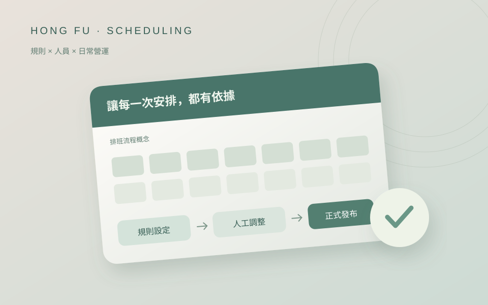

內網 AI · 從需求到持續運作
讓知識，成為可用的答案
- Why
- 我希望累積的專業知識，能成為團隊的日常支援。
- How
- 主導地端 AI 建置與維運，整合私有模型與 RAG。
- What
- 401GPT 服務 436 位使用者，每日 150–500 次查詢。
AI／GeoAI · 系統整合與研發管理
401GPT · 履歷自述
MiCOP · 約計人數
自動化 · 每月估算
同步推進 5 個專案
希望知識被使用，以地端 AI 承接查詢需求。
把重複步驟交給流程，並用明確基準說明規模。
從影像判讀、地理資訊平台，到內網 AI 與自動化。我關心的是：系統上線以後，是否真的能承接團隊的工作。
我希望資訊不只被儲存，也能被理解、運用，成為團隊持續工作的能力。
以使用情境為起點，串接資料、模型與既有系統，帶領團隊一起完成部署與後續維運。
從 436 人使用的內網 AI，到約 15,000 人使用的地理平台，讓整合成果進入日常作業。
從真實情境出發，探索介面、資料與人的關係。

營運工具 · 規則與流程

地理應用 · 旅程與資訊
每一段經歷，都讓技術更靠近使用現場。
為了讓新技術進入作業流程，帶領 20 人團隊，推進 5 個專案，承擔需求、部署與維運責任。
將技術交流放回工作需求，累積跨域溝通與系統協作的經驗。
以共同地理資訊支援協作，主導 MiCOP 架構重構與整合，承接大規模圖資及服務。
從理解地理情境與影像資料開始，建立把資料轉成判斷依據的工作基礎。
資訊工程碩士 · 測繪學士
RHCE / RHCSA
Google、IBM 專業證書
我希望讓技術成為日常工作的助力。從需求、整合到維運，我願意承擔落地的責任，一起把眼前的問題轉成可執行的下一步。